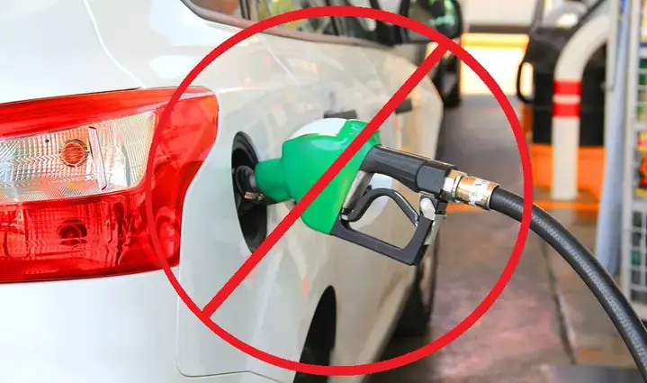
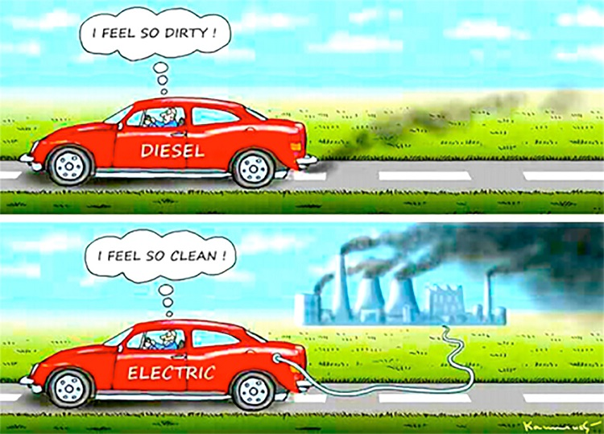

California Democrats advocate for banning gas-powered cars to combat climate change, improve public health, and drive economic innovation. Gas vehicles are major contributors to greenhouse gas emissions and air pollution, harming ecosystems and disproportionately impacting vulnerable communities. Transitioning to electric vehicles (EVs) will reduce emissions, create jobs in clean energy industries, and ensure a healthier, more equitable future. California's leadership, including its 2035 target to phase out gas cars, sets a global example for climate action while promoting technological and economic progress.
Texas Republicans oppose banning gas-powered cars, emphasizing energy independence, economic stability, and personal choice. Gas vehicles are vital to Texas's oil and gas economy, supporting jobs and growth. A ban risks increasing reliance on foreign-made EV components and straining infrastructure. Texans value affordable, reliable transportation, and restrictive policies could harm rural and working-class communities. Instead of bans, innovation in cleaner fuel technologies and incentives for voluntary EV adoption can balance environmental concerns with economic prosperity and individual freedoms.
A balanced approach to addressing the impact of gas-powered cars can align environmental and economic priorities. Instead of an outright ban, policies could focus on incentivizing the adoption of electric vehicles (EVs) while improving the efficiency and emissions of gas-powered cars. Investment in infrastructure, like EV charging stations, and support for cleaner fuel technologies can ensure a smoother transition. Regional needs, such as urban air quality and rural accessibility, should guide solutions, fostering progress without undue economic disruption or limiting personal choice.